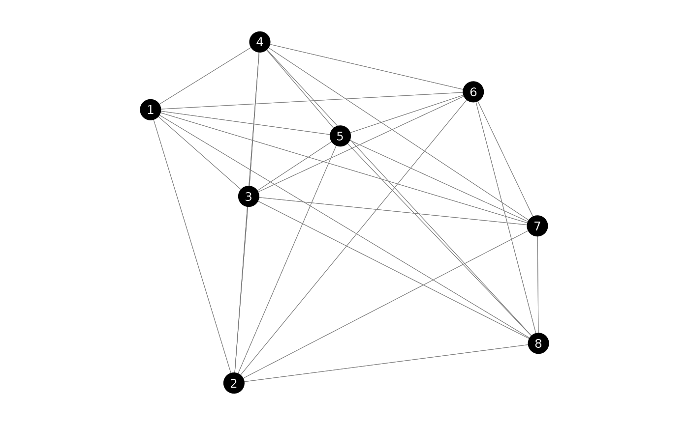
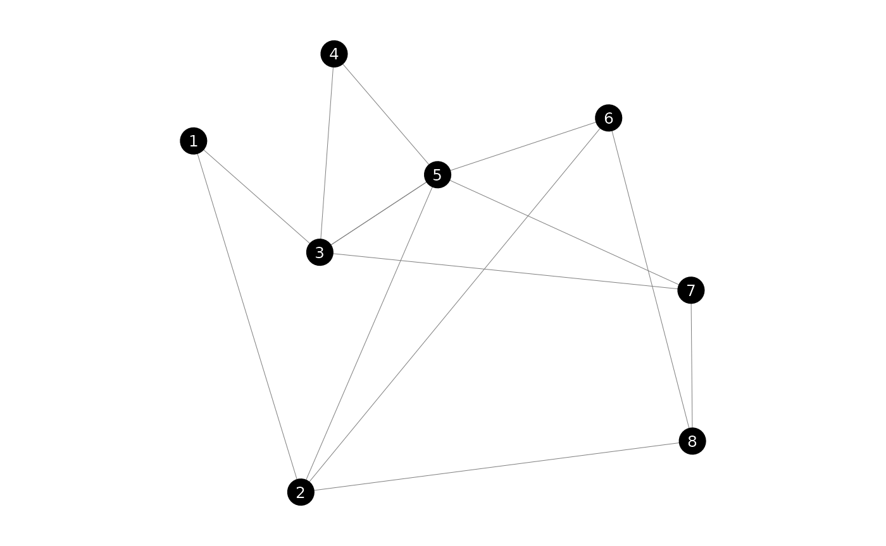
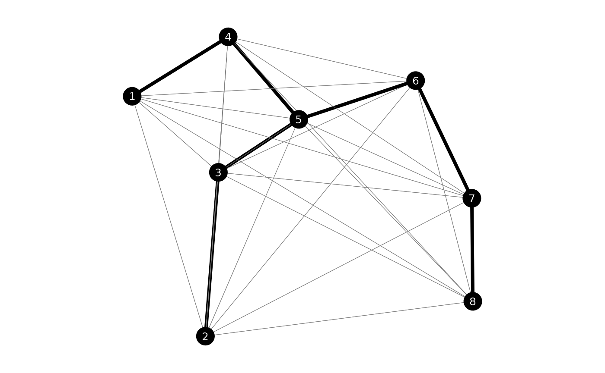

This vignette focuses on all sorts of problems relating to graphs. We will create a complete graph and an incomplete but connected graph.
library(lpsugar)
library(ROI)
#> ROI: R Optimization Infrastructure
#> Registered solver plugins: nlminb, highs.
#> Default solver: auto.
library(dplyr, warn.conflicts = FALSE)
set.seed(125)
n <- 8
nodes <- tibble(
x = runif(n),
y = runif(n)
) |>
arrange(x) |>
mutate(ind = 1:n)
edges_complete <- expand.grid(from = nodes$ind, to = nodes$ind) |>
as_tibble() |>
filter(from != to) |>
mutate(
x1 = nodes$x[from],
x2 = nodes$x[to],
y1 = nodes$y[from],
y2 = nodes$y[to],
dx = x1 - x2,
dy = y1 - y2,
cost = sqrt(dx^2 + dy^2),
dx = NULL, dy = NULL,
active = FALSE,
)
edges_connected <- edges_complete |>
slice_sample(prop = 0.25, weight_by = 1/cost)
plot_graph(edges_complete)
plot_graph(edges_connected)
Minimum Spanning Tree
Complete graph
We start by creating the cost matrix. It’s a symetrical square matrix indicating the distance from each to each node.
We will solve it as a flow problem. We choose an arbitrary root node and make it send units of flow, where is the number of nodes. Each node demands 1 unit.
Our decision variable flow[i, j] indicates how many
units flow from node i to j. Since
flow[i, i] will be zero, we can fix an upper bound of 0 for
the diagonal of flow.
upper_bound <- matrix(Inf, nrow = n, ncol = n)
diag(upper_bound) <- 0
msp <- lp_problem() |>
lp_variable(flow[nodes$ind, nodes$ind], lower = 0, upper = upper_bound)
# Alternatively, but slower
msp <- lp_problem() |>
lp_variable(flow[nodes$ind, nodes$ind], lower = 0) |>
lp_constraint(diag(flow) == 0)The next step is to set our objective. But for this we will need an
auxiliary binary variable, telling us whether an edge has a flow. We
call this variable has_flow and define it as binary. Then
we connect it to our flow variable.
msp <- msp |>
lp_variable(has_flow[nodes$ind, nodes$ind], binary = TRUE) |>
lp_constraint(flow <= n * has_flow)We can now set the objective.
msp <- msp |>
lp_minimize(sum(cost * has_flow))Now let’s restrict the flow of the rest of the nodes. Let’s choose the 1st node as our root. It will have a supply of units. Each other node will have a supply of and a demand of .
msp <- msp |>
lp_constraint(
root = sum(flow[1, ]) <= n,
demand = for (i in nodes$ind)
sum(flow[, i]) - sum(flow[i, ]) == 1
)The full code of the problem is this:
upper_bound <- matrix(Inf, nrow = n, ncol = n)
diag(upper_bound) <- 0
msp <- lp_problem() |>
lp_variable(
flow[nodes$ind, nodes$ind],
lower = 0, upper = upper_bound
) |>
lp_variable(
has_flow[nodes$ind, nodes$ind],
binary = TRUE
) |>
lp_minimize(
sum(cost * has_flow)
) |>
lp_constraint(
aux = flow <= n * has_flow,
root = sum(flow[1, ]) <= n,
demand = for (i in nodes$ind[-1])
sum(flow[, i]) - sum(flow[i, ]) >= 1
)Let’s find the solution.
msp_solution <- lp_solve(msp)
msp_solution$objective
#> [1] 2.097602
msp_solution$variables$has_flow
#> nodes$ind
#> nodes$ind 1 2 3 4 5 6 7 8
#> 1 0 0 0 1 0 0 0 0
#> 2 0 0 0 0 0 0 0 0
#> 3 0 1 0 0 0 0 0 0
#> 4 0 0 0 0 1 0 0 0
#> 5 0 0 1 0 0 1 0 0
#> 6 0 0 0 0 0 0 1 0
#> 7 0 0 0 0 0 0 0 1
#> 8 0 0 0 0 0 0 0 0